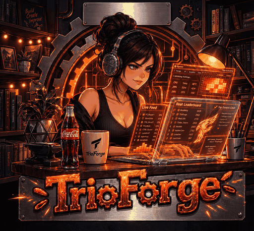
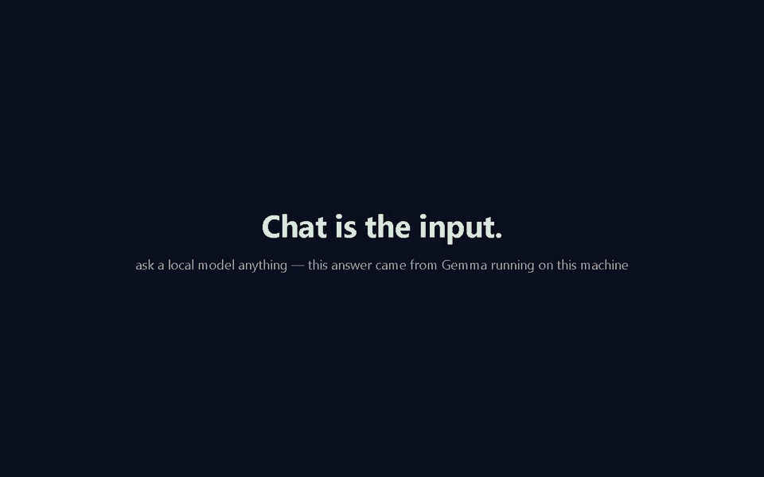
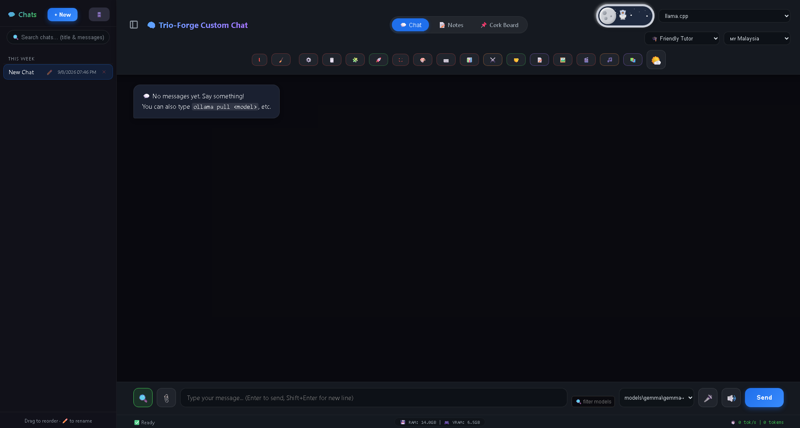
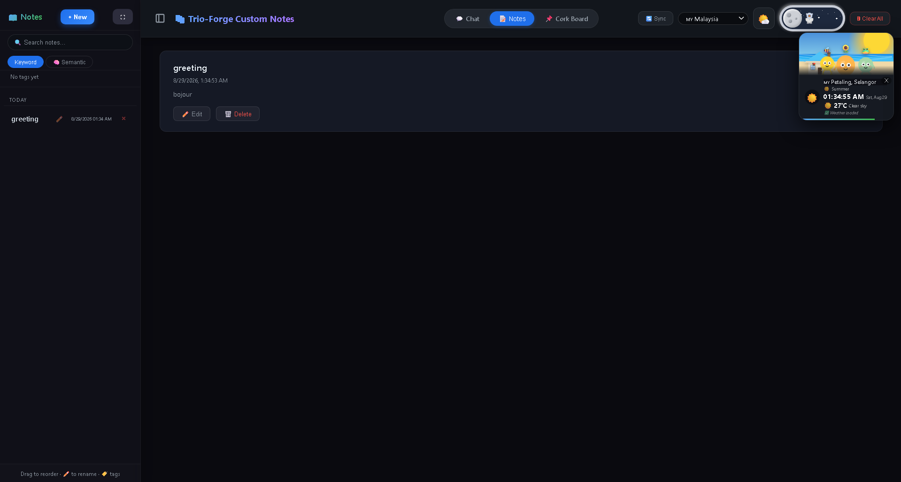
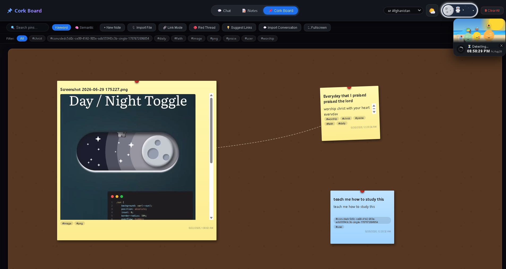

Self-hosted AI workspace
Chat is the input.
The board is the output.
Ask a local model anything, send the answer to the corkboard, let the model rewrite it there, and link it to what you already know. One app — chat, notes and pins — running on your own machine.
7.9 MB · no Python, no terminal, no account · it keeps itself updated


What it is
Most tools make you pick one: a chat UI, or a notes app, or a whiteboard. TrioForge connects them — and the AI works in all three.
Chat with a local model (llama.cpp, Ollama) or a cloud one (Groq, DeepSeek, Claude, Gemini, OpenRouter).
Send any answer to the corkboard: it lands as a pin you can rewrite with the model, in place.
Link pins to each other and to your notes, so an idea keeps the context that produced it.
Features
Everything below runs on your machine. Nothing needs an account.
Chat → board
Turn any conversation into pins, rewrite them with the model on the board, and link them into a map you keep.
Coding agent
Point it at a folder and it reads, searches, writes, edits and runs — up to 20 steps, with a live diff panel.
Full-text search
SQLite FTS5 across every message you have ever sent, ranked with highlighted snippets and click-to-jump.
Export & import
Any chat, or all of them, as Markdown or lossless JSON — and import them back as new chats.
Voice, locally
Speech-to-speech on your own hardware (STT + llama.cpp + TTS), plus browser mic and speaker buttons.
Document chat
Upload PDFs, Word files, code or Markdown and ask questions grounded in them (RAG).
Image, video, audio
Generate with ComfyUI locally, or OpenRouter / Gemini in the cloud — results land in your chat.
Compare & multi-agent
Two models side by side on one prompt, or up to six models on one task at the same time.
Installable app
Add it to your phone or desktop home screen; the layout adapts, and it works over your LAN.
The three views
One window, one tab row — the chat's chrome gets out of the way when you're in the other two.



System requirements
Much lighter than the feature list suggests: the app itself is small, and only the models are big.
| Operating system | Windows 10/11 (64-bit) · macOS 12+ · Linux (glibc) · WSL2 · Docker |
|---|---|
| Python | Not required. The launcher finds or installs it and sets up its own environment. |
| Memory | 8 GB minimum, 16 GB comfortable. Notes and the corkboard need very little. |
| Graphics | Optional. NVIDIA (CUDA), AMD (ROCm), Apple Silicon (Metal) and Vulkan are auto-detected for local models; CPU works too, just slower. |
| Disk | ~1 GB for the app and its dependencies, plus whatever models you download (typically 1–8 GB each). |
| Models | Bring your own .gguf (llama.cpp), use Ollama, or skip local models entirely with an API key. |
| Internet | Only needed to install or fetch models. Chat with local models works offline. |
Get it running
Three ways in. Pick the one that matches your machine.
🪟 Windows — download and double-click easiest
No Python, no terminal, no git. The launcher fetches the app, installs what it needs, starts it and opens the setup panel.
Unsigned, so Windows SmartScreen warns once: More info → Run anyway.
🐳 Docker — servers, NAS, WSL2, Linux, macOS
Runs the app in a container and talks to a llama-server or Ollama on your host. Your chats and files stay on your disk.
docker run -d --name trioforge -p 5002:5001 \
--add-host host.docker.internal:host-gateway \
-e OLLAMA_BASE_URL=http://host.docker.internal:11434 \
-v trioforge-data:/app/sqlite_data \
-v trioforge-config:/app/json_configuration \
ghcr.io/meowmeowsmh/trioforge:latestThen open http://localhost:5002. Update later with ./docker/application.sh --update.
📦 From source — full control
One command finds or installs Python, builds the environment and starts the app. It also keeps the checkout updated on every launch.
git clone https://github.com/meowmeowsmh/TrioForge.git
cd TrioForge
./run.sh # Windows: double-click application.batapplication.bat --install-autostart (or ./run.sh --install-autostart) —
per-user, no admin rights, quiet in the background, and it keeps itself up to date.
Private by default
- No account, no sign-up, no telemetry
- Conversations live in SQLite under
sqlite_data/on your disk - Model files are never uploaded and never committed
- API keys stay in your browser unless you set them as environment variables
- Works fully offline with local models
Release
v1.0.3 — installs without a C++ compiler, and the Windows launcher no longer closes on failure.
- MIT licensed — use it, fork it, ship it
- Every push rebuilds the container image and the Windows exe
- CI runs the app and the ComfyUI flow on real Apple Silicon